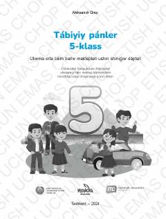

TF5-sinf o'quvchilari uchun tabiiy fanlar fanidan qoraqalpoq tilidagi amaliy mashq daftari.
Ushbu mashq daftari 5-sinf o'quvchilari uchun mo'ljallangan bo'lib, tabiiy fanlar fanini qiziqarli tarzda o'rganishga, ilmiy fikrlash va amaliy ko'nikmalarni rivojlantirishga xizmat qiladi. Kitob qoraqalpoq tilida tuzilgan bo'lib, turli amaliy topshiriqlar, boshqotirmalar va bilimlar xaritalarini o'z ichiga oladi.